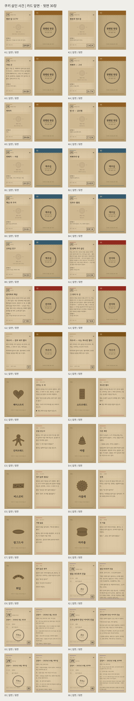
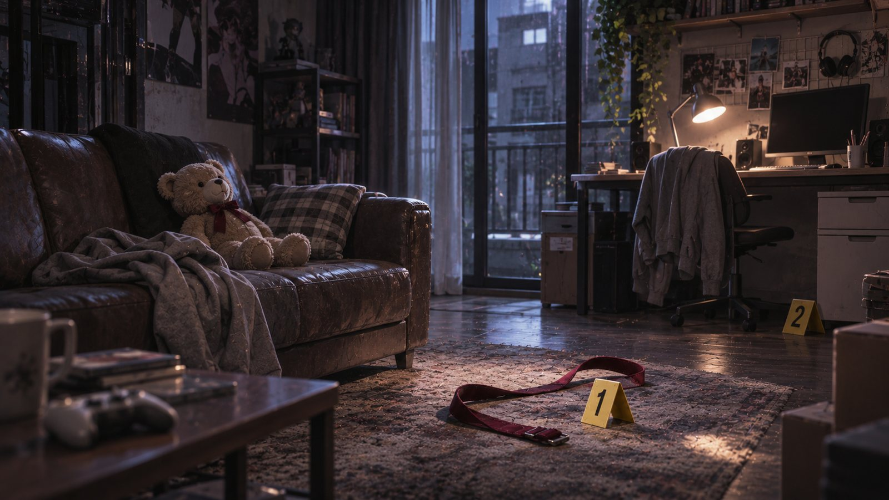
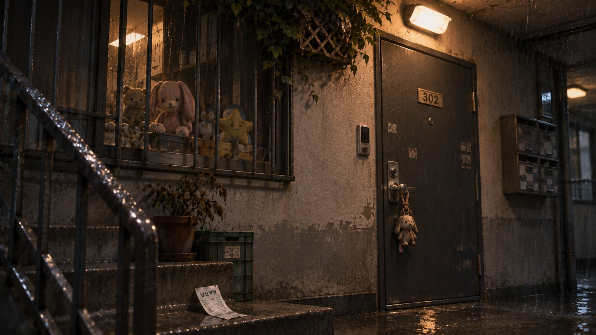
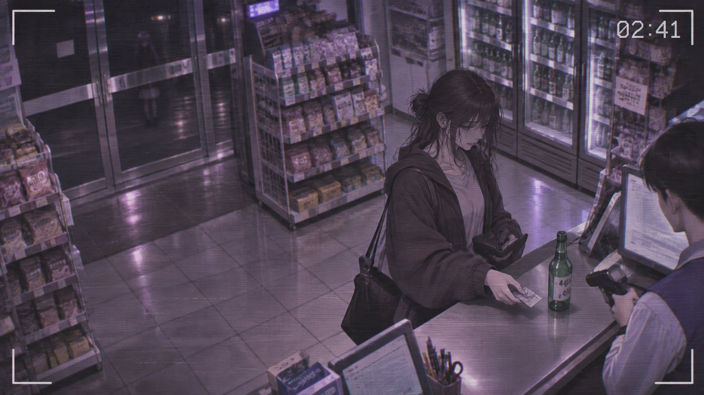
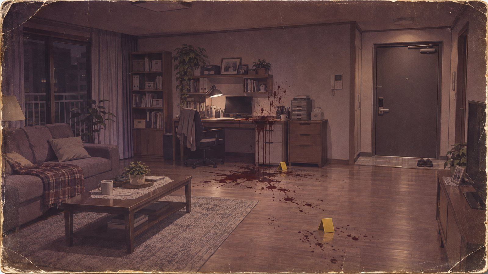
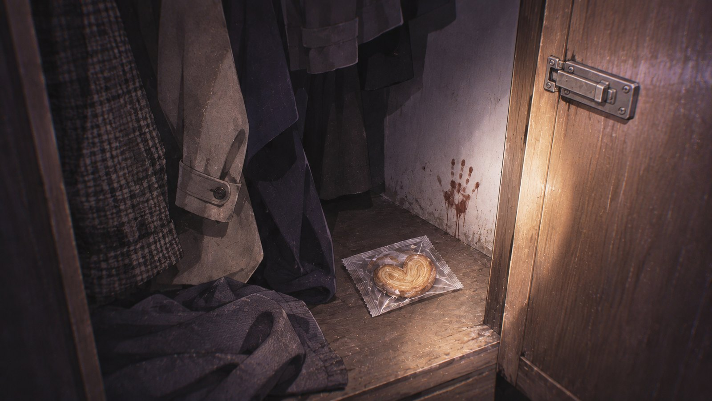
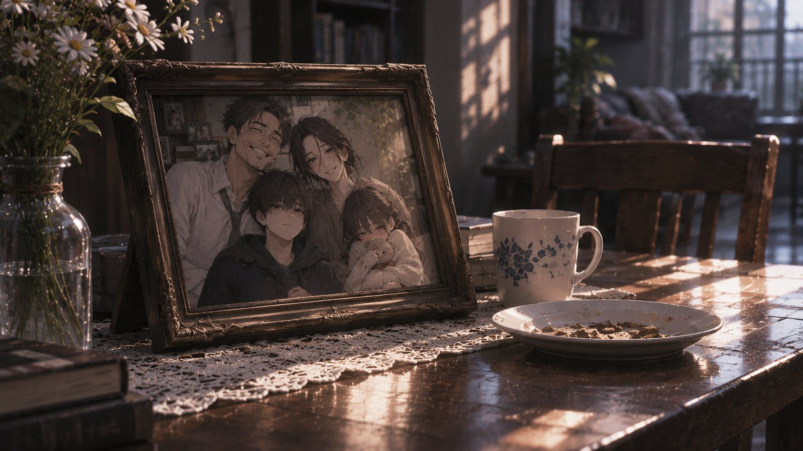
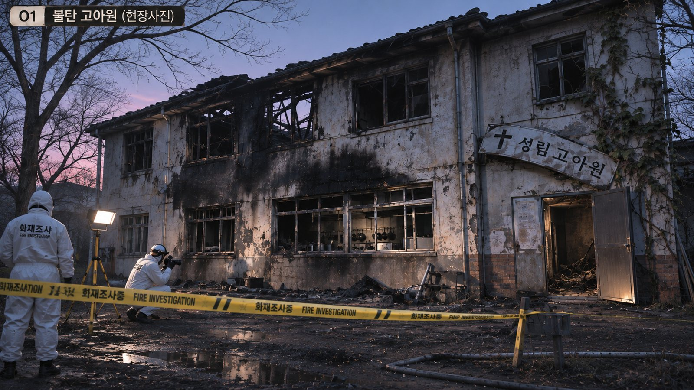
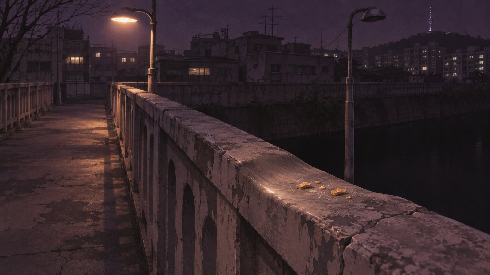
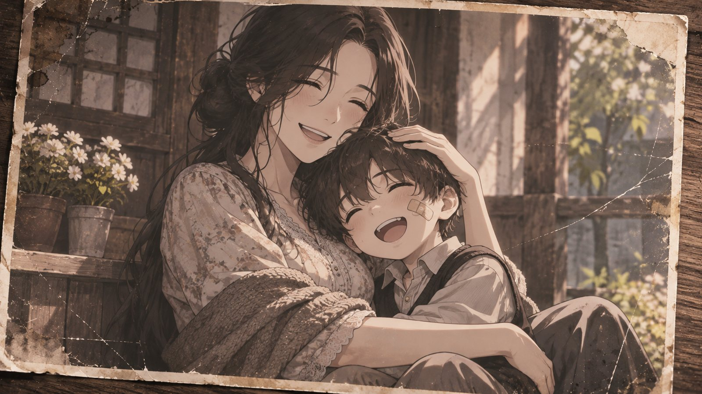

"당신은… 맛이 없게 생겼군." — 취조실에 마주 앉은 범인과 형사, 티비 한 대, 두 사람이 서로를 읽는 50분.
| 장르 | 2인 대립형 취조 머더미스터리 (범인 vs 형사) |
|---|---|
| 인원 · 시간 | 2인, GM 없음 · 약 75분 (준비 10 + 취조 50 + 판결·엔딩 15) |
| 난이도 | ★★★☆☆ (5단계 중 3 · 보통) |
| 구성 | 카드 30장 · 종이 핸드아웃 · 엔딩 책자 · 티비(테이블 가운데 한 대, 휴대폰이나 태블릿으로 여는 웹페이지) |
| 지원 트랙 | Track 02 기믹 및 시스템 (주) · Track 01 세계관 및 스토리 독창성 (부) |
기획 의도
2인 머더미스터리는 대부분 둘이 함께 푸는 협력 추리이거나 둘 중 하나가 범인인 구조입니다. 이 작품은 범인이 누구인지를 처음부터 밝혀 둡니다. 형사는 범인과 현장을 캐고, 범인은 잃어버린 자기 기억과 형사의 과거를 캡니다.
규칙의 중심은 하나입니다. 거짓말은 자유지만 카드는 부인할 수 없습니다. 그래서 거짓말은 사실과 사실 사이의 연결을 끊는 데 쓰이고, 어떤 카드를 골라 내보이고 어떻게 이어 붙이느냐가 진실에 다가가는 유일한 길입니다. 카드를 잘 선택해 진실에 다가가는 것이 이 작품의 핵심입니다.
시놉시스
3년 전, 반지하에서 혼자 살던 여성이 죽고 현장에 쿠키가 놓였습니다. 사람들은 그것을 쿠키 살인이라 불렀습니다. 그 뒤로 1년에 한 번, 10월이면 같은 일이 일어났고, 지난 10월 맥주집 아르바이트생이 네 번째였습니다. 경찰은 다음이 내년 10월일 거라 생각했습니다. 그런데 석 달 만에 한 남자가 살인 미수 현행범으로 잡혔습니다. 한 달 동안 입을 닫았던 남자는 자기를 잡은 형사와만 말하겠다고 합니다.
형사에게는 이 현행범이 연쇄 살인범이라고 자백하는 것이 가장 좋습니다. 그래서 형사는 그와 마주 앉아 취조를 하면서 사건들을 하나씩 파헤치기 시작합니다. 그리고 이윽고 결말에 다다랐을 때, 형사는 어떤 선택을 할지 골라야 합니다.
이 작품의 구조
- 티비 한 대를 둘이 같이 봅니다. 카드의 코드를 넣으면 현장 사진이 뜨고, 사진 속 의심스러운 곳을 눌러 단서를 찾습니다. 어떤 단서는 범인에게만 "기억을 펼쳐 읽으라"고 지시합니다.
- 같은 화면, 다른 기억. 현장은 둘이 함께 보지만 기억은 범인의 핸드아웃에만 있습니다. 범인은 떠오른 기억을 말할지 숨길지 고르고, 형사는 그 입을 열어야 합니다.
- 엔딩은 열, 승패는 두 사람이 정합니다. 범인의 마지막 선택과 형사의 기소에 따라 결말이 갈리고, 마지막 두 질문을 누가 맞혔는지에 따라 쓸 수 있는 서류가 달라집니다. 두 사람이 다 그녀에게 닿으면 한 장이 더 열립니다.
티비 목업 탭이나 티비 파일에서 바로 넣어 볼 수 있는 카드 코드와 막의 질문 답이다. 스포일러 주의.
1막 — 현행범 현장 (처음부터 열림)
| 카드 | 코드 | 종류 | ▶ 지시 |
|---|---|---|---|
| K2 · 현관과 영수증 | 1ㅁ5ㅈ | 사진 | |
| K3 · 가방 끈 | 4ㄷ8ㅇ | 글 | 범인: 기억 ①을 읽는다 |
| K4 · 피해자 — 그녀 | 3ㄴ7ㅁ | 사진 | |
| K5 · 피의자 | 9ㅊ4ㄹ | 사진 | |
| K6 · 방 안 — 곰인형 | 7ㄱ2ㅂ | 사진 | 형사: 비밀 ①을 읽는다 · 형사: 비밀 ③을 읽는다 |
2막 — 맥주집 (1막 질문을 맞히면)
| 카드 | 코드 | 종류 | ▶ 지시 |
|---|---|---|---|
| B1 · 피해자 — 서연 | 4ㅈ3ㅋ | 사진 | |
| B3 · 국과수 촬영 — 책상 위 쿠키 | 2ㅇ4ㅅ | 사진 | 범인: 기억 ②를 읽는다 |
| B5 · 오락실 친구 | 5ㅂ3ㅈ | 사진 | |
| B6 · 편의점 CCTV — 새벽 2시 41분 | 6ㅈ1ㅂ | 사진 |
3막 — 반지하 (2막 질문을 맞히면)
| 카드 | 코드 | 종류 | ▶ 지시 |
|---|---|---|---|
| G1 · 첫 번째 쿠키 살인 | 2ㄷ3ㅌ | 글 | 형사: 비밀 ②를 읽는다 · 범인: 기억 ③을 읽는다 · 국과수 감정서 카드 X6을 꺼낸다 |
| G2 · 반지하의 책상 | 2ㄱ0ㅇ | 사진 | 범인: 기억 ④를 읽는다 |
| G3 · 그 뒤의 두 건 | 6ㄱ6ㅍ | 글 | |
| G4 · 사건기록 — 2015년 10월 14일 | 4ㄹ7ㅎ | 사진 |
특수 카드 — 코드가 없다. 사진 지점을 눌러 꺼낸다
| 카드 | 종류 | 막 | 꺼내는 자리 | 읽는 사람 |
|---|---|---|---|---|
| X2 · 옆집 303호의 진술 | 증언 | 1막 | K2 사진의 4번 지점 | 둘 다 |
| X3 · 감정서 — 2019년 1월, 302호 | 국과수 | 1막 | K6 사진의 1번 지점 | 둘 다 |
| X4 · 오락실에서 만난 아이의 진술 | 증언 | 2막 | B5 사진의 3번 지점 | 둘 다 |
| X5 · 감정서 — 2018년 10월, 맥주집 | 국과수 | 2막 | B3 사진의 4번 지점 | 둘 다 |
| X6 · 감정서 — 2015년 10월, 반지하 | 국과수 | 3막 | G1 본문의 ▣ 지시 | 둘 다 |
증언·국과수 감정서는 서류라 다른 카드보다 크다 — A6(105×148mm). 그녀의 일기장은 카드가 아니라 형사 핸드아웃의 비밀 ③ 이다.
막의 질문과 답 ("4 기억" 채널)
| 막 | 질문 | 답 |
|---|---|---|
| 1막 → 2 범인의 질문 — 범인이 기억 ①을 읽으면 나타난다. | 그녀가 가족을 떠나 연락을 끊었던 것은 몇 년 동안인가? | 3년 |
| 1막 → 2 형사의 질문 — 형사가 비밀 ①을 읽으면 나타난다. | 영수증의 국밥 2인분. 피의자는 그 밤 누구와 먹었나? | 그녀 |
| 2막 → 3 범인의 질문 — 범인이 기억 ②를 읽으면 나타난다. | 그녀가 제일 싫어한다는 그 쿠키를, 집에 늘 사다 놓던 사람은 누구인가? | 어머니 |
| 2막 → 3 형사의 질문 — 책상 위 쿠키 카드를 열면 나타난다. | 책상 위에 남긴 쿠키는 누구에게 보내는 편지였나? | 진짜 범인 |
| 3막 → 판결 범인의 질문 — 범인이 기억 ④를 읽으면 나타난다. | 그녀는 왜 쿠키를 먹을까? (막 전환에 필요 없음) | 피를 좋아하니까 · 피를 마셔 그들을 이해하려고 |
| 3막 → 판결 형사의 질문 — 형사가 비밀 ②를 읽으면 나타난다. | 피의자가 피 묻은 쿠키를 처음 받아먹은 곳은 어디인가? | 다리 |
순서: "켠다" → "시작" → 1막 코드 입력 → 사진의 의심스러운 곳 누르기 → "4 기억"에서 답 입력. 3막에서 형사의 질문을 못 맞힌 채로 판결로 가 보려면 "4 기억"의 「시간이 끝났다 — 판결로 간다」를 두 번 누른다. 갈래 넷: 둘 다 맞힘(고른 엔딩 + 「마들렌」) · 범인만(범인의 자수) · 형사만(범인은 연쇄 살인마 — 자수서 못 씀) · 둘 다 못 맞힘(「머랭」). 코드 대신 카드 번호(K2, B3, G1 …)를 넣어도 열린다.
1. 개요
| 항목 | 내용 |
|---|---|
| 작품명 | 쿠키 살인 사건 |
| 장르 | 2인 대립형 취조 머더미스터리 — 범인 vs 형사. 범인 찾기가 아니라 "쿠키 살인을 어느 손에 묶느냐"와 "누가 상대를 먼저 읽느냐" |
| 인원 | 2인. GM 없음 — 판정은 티비(웹페이지)와 룰북의 판결표 |
| 플레이 시간 | 약 75분. 준비 10분 + 취조 50분(타이머) + 판결·엔딩 15분 |
| 카드 | 30장 — 현장 카드 13 · 선택 카드 2 · 엔딩 카드 10 (63×88mm) · 특수 카드 5 (A6) |
| 그 밖의 구성 | 종이 HO(공용 프롤로그 · 범인 HO · 형사 HO · 엔딩 책자) · 티비(테이블 가운데 한 대, 웹페이지) · 정답 봉투(오프라인용) |
| 지원 트랙 | Track 02 기믹·시스템 (주) · Track 01 세계관·스토리 (부) |
| 일정 | 11/22 제출 → 11월 말 테스트 플레이 → 12월 중순 채점 확정 → 12월 말 원고·카드 디자인 → 1월 런칭 |
2. 기획 의도
2인 머미는 거의 전부 협력 추리나 둘 중에 하나가 범인인 게 많습니다. 이 작품은 반대로 갑니다. 여기는 두 사람이 마주 앉아 서로를 읽는 취조실입니다. 형사는 범인과 현장을 캐고, 범인은 자신과 형사의 과거를 캡니다.
규칙의 중심 : 거짓말은 자유지만 카드는 부인할 수 없습니다. 그래서 거짓말은 사실들 사이의 연결을 끊기 위해 사용하고, 카드를 이어 붙이는 것이 유일한 진실이 됩니다.
3. 시놉시스
취조실. 테이블 하나, 의자 둘, 물은 없다. 살인 미수로 체포된 남자가 앉아 있다. 한 달 전, 한 여자의 집에서 그녀의 목을 조르던 중에 잡혔다. 경찰은 그를 연쇄 살인 '쿠키 살인'의 범인으로 본다 — 3년 전 반지하에서 혼자 살던 여성이 죽고 현장에 쿠키가 놓인 뒤로, 1년에 한 번, 10월이면 같은 일이 일어났다. 지난 10월 맥주집 아르바이트생이 네 번째였다. 경찰은 다음이 내년 10월일 거라 생각했다. 그런데 석 달 만에 이 남자가 현행범으로 잡혔다. 남자는 한 달 동안 한마디도 하지 않다가, 갑자기 자기를 잡은 형사와만 말하겠다고 했다. 테이블 가운데에는 작은 티비가 켜져 있다.
남자가 형사의 눈을 한참 보고 말한다. "당신은… 맛이 없게 생겼군."
형사에게는 이 현행범이 연쇄 살인범이라고 자백하는 것이 가장 좋다. 그래서 그와 마주 앉아 사건들을 하나씩 파헤치기 시작한다. 그리고 결말에 다다랐을 때, 형사는 어떤 선택을 할지 골라야 한다.
4. 세계관 — 최면 취조, 같은 꿈
두 사람은 최면 취조를 하고 있다. 피의자가 자기를 잡은 형사와만 말하겠다고 했을 때 검찰이 허가한 방식이다. 두 사람은 같은 꿈을 꾸면서 이야기한다. 티비가 그 꿈이다 — 둘이 같은 화면을 본다. 그래서 범인은 잃은 기억을 되찾을 수 있고, 형사는 자기가 무심코 지나친 기억을 처음 마주한다. 판결은 꿈에서 깨는 순간이다.
5. 인물
범인 (플레이어). 보건소 채혈 직원. 초등학교 6학년 이전 기억이 없다. 피를 쿠키에 찍어 맛보면 편안해지고 옛 기억이 떠오른다 — 예전에 먹은 그 맛을 찾고 있다. 지난 여름, 채혈하던 형사의 "불길한 과자는 안 먹습니다"라는 말에 기사에서 봤던 쿠키 살인을 떠올리고 조사를 시작했다. 그 사람을 만나려고 맥주집 알바를 죽였고(주기는 몰랐다 — 우연히 10월이었다), 석 달 뒤 오락실 친구를 노리다 잡혔다.
형사 (플레이어). 범인을 잡은 사람. 3년 전 아버지와 새엄마를 강도 사건으로 잃었다(그렇게 알고 있다). 새엄마가 데려온 동생을 책임지기로 했고, 동생의 집 안팎에 CCTV를 달고 근처 차에서 자며 지켰다. 그 밤 5분 만에 도착해 현행범을 잡아 특진했다. 목표: 쿠키 살인을 이 남자에게 묶기, 동생의 이름과 감시 사실은 기록에 남지 않게, 그리고 올바르게 판단하기.
그녀 — 김서연 (형사의 동생 — 의식 불명. 맥주집 피해자 서연과 성만 다르다). 진짜 쿠키 살인범. 엄마의 '놀이'(채찍)를 받고 자란 사이코패스. 부모가 죽은 뒤 발인 날 새벽 반지하에서 첫 쿠키 살인을 저질렀고, 그 뒤 1년에 한 번, 같은 달에 저질렀다. 경찰의 탐색이 심해지자 정보를 얻으려고 오빠에게 돌아왔다. 자기 달에 누가 먼저 저지른 맥주집 사건을 보고 범인을 '내 모방범'으로 여겨 곁에 두었고, 자기 살인까지 떠넘길 기회로 삼아 미끼가 되었다. 다리 위 소년이 범인인 줄은 모른다.
6. 사건 순서와 타임라인
티비로 여는 현장은 셋이다. 나머지는 말과 핸드아웃으로만 나온다.
| 때 | 사건 | 손 | 게임에서 |
|---|---|---|---|
| 2007 | 다리 위의 만남, 다리 아래의 일 | 그녀 (범인이 곁에) | 범인 핸드아웃 기억 ④ |
| 2015년 10월 | 형사 부모의 죽음 (강도로 기록) | — | 말로만. 엔딩 책자에서 짐작만 하게 둔다 |
| 2015년 10월, 발인 날 새벽 | 반지하 여성 살인 — 첫 번째 쿠키 살인 | 그녀 | 현장 3막 (카드 4) |
| 2016·2017년 10월 | 두 건 더. 현장이 심하게 훼손됨 | 그녀 | 기록 카드 한 장 |
| 2018년 여름 | 채혈. "불길한 과자" — 범인이 조사를 시작 | — | 범인 핸드아웃 기억 ③ |
| 2018년 10월 | 맥주집 알바 살인 — 네 번째로 기록 | 범인 | 현장 2막 (카드 4) |
| 2019년 1월 말 | 현행범 — 그녀의 집, 살인 미수 | 범인 | 현장 1막 (카드 5) |
| 2019년 2월 말 | 취조실 | 게임 시작 |
7. 진실과 개연성
쿠키 살인은 한 사람의 것이 아니다. 앞의 세 건은 그녀, 맥주집과 현행범은 범인이다. 범인은 그녀를 만나려고 죽였는데 우연히 그녀의 달이었고, 그래서 경찰의 눈에는 네 번째로 보인다.
- 왜 범인이 연쇄 살인범으로 의심받는가. 10월, 혼자 사는 여성, 쿠키 — 맥주집이 주기에 맞았고, 현행범의 품에서 쿠키가, 손에서 맥주집 피해자의 끈이 나왔다.
- 범인은 무엇을 보고 따라 했는가. 3년이 지난 반지하에는 쿠키가 남아 있지 않았다. 범인은 '현장에 쿠키가 있었다'는 것만 알고, 어떻게 놓였는지는 모른다. 그래서 다르게 놓았다.
- 두 손은 무엇으로 갈리는가. 반지하: 쪼갠 쿠키의 남은 반쪽에 피가 없다 / 열어 준 문, 아는 사이 / 벨트. 맥주집: 남긴 쿠키까지 피에 젖어 봉지에 들어 있다 / 미리 열어 둔 창문 / 가방 끈.
- 형사는 무엇으로 동생에 닿는가. 반지하의 사망 시각이 부모 발인 날 새벽, 동생이 사라진 시간이다. 피해자 방 사진 속 친구, 그리고 현행범 현장의 이상한 점들 — 안에서 열린 문, 저항의 부재, 자기가 단 카메라(처마의 돔 카메라, 곰인형 눈 속의 렌즈).
- 그녀는 왜 당했는가. 오빠가 5분 거리에서 보고 있다는 걸 알았다. 문을 열어 두고, 끈 안에 손가락 하나를 끼운 채 버텼다. 모방범이 잡히면 전부가 그의 것이 된다.
- 주기가 깨진 것. 다음은 2019년 10월이어야 했다. 석 달 만의 범행은 '같은 사람이 아니다'의 첫 신호다.
형사가 여기까지 오면 골라야 한다 — 동생의 이름을 적을 것인가, 동생을 구하기 위해 이 남자를 전부의 연쇄 살인범으로 만들 것인가.
8. 시스템
티비 한 대. 테이블 가운데 화면 하나를 둘이 같이 본다. 턴이 없다. 취조는 말로, 언제든.
현장 카드와 코드. 카드의 네 글자 코드를 넣으면 현장이 뜬다. 사진 카드는 의심스러운 곳을 눌러 단서를 찾는다(지점 셋, ★ 하나가 핵심). 글 카드는 감정서·기록이다. 단서는 둘 다 본다.
▶ 지시. 어떤 단서는 한 사람에게만 지시한다 — "▶ 범인: 기억 ②를 읽는다", "▶ 형사: 비밀 ①을 읽는다". 그 사람만 자기 핸드아웃의 그 대목을 펼친다. 읽은 것을 말할지 숨길지는 그 사람이 정한다. 현장은 같이 보고, 기억과 비밀은 각자 쥔다.
거짓말은 자유, 카드는 부인 불가. 화면에 뜬 것은 둘 다 봤으니 부인할 수 없다. 거짓말은 사실과 사실 사이의 연결을 끊는 데 쓴다. 어떤 카드를 먼저 열고 무엇과 이어 붙이느냐가 진실에 다가가는 길이다.
막 전환. 3막 + 판결. 막의 질문에 답하면 다음 현장이 열린다. 막마다 질문이 둘이다 — 범인의 질문 하나, 형사의 질문 하나. 각자 ▶ 지시로 자기 핸드아웃(기억·비밀)을 읽고 나면 화면에 나타나고, 둘 다 맞혀야 넘어간다. 범인의 질문은 그녀의 과거를 묻고 답은 형사가 안다. 형사의 질문은 사건의 실마리를 묻고 답은 범인이 안다.
| 막 | 현장 | 다음으로 가는 질문 |
|---|---|---|
| 1막 | 현행범 (2019.1) | 범인의 질문: 그녀가 가족을 떠나 연락을 끊었던 것은 몇 년 동안인가? (3년) · 형사의 질문: 영수증의 국밥 2인분, 그 밤 누구와 먹었나? (그녀) |
| 2막 | 맥주집 (2018.10) | 범인의 질문: 그녀가 제일 싫어한다는 그 쿠키를 집에 늘 사다 놓던 사람은? (어머니) · 형사의 질문: 책상 위에 남긴 쿠키는 누구에게 보내는 편지였나? (진짜 범인) |
| 3막 | 반지하 (2015.10) | 형사의 질문: 피의자가 피 묻은 쿠키를 처음 받아먹은 곳은? (다리) — 이것만 맞히면 판결로. 범인의 질문: 그녀는 왜 쿠키를 먹을까? (피를 좋아하니까 — 형사 핸드아웃 비밀 ③ 일기장) — 판결 끝까지 열려 있다. 형사는 숨길지 정하고, 범인이 맞히면 형사는 동생을 지키지 못한 것이다. |
끝. 형사의 마지막 질문에 답하면 판결로. 타이머(50분)가 끝나면 3막 "4 기억" 채널의 「시간이 끝났다 — 판결로 간다」를 두 번 누른다 — 되돌릴 수 없고, 형사의 마지막 질문은 닫힌다. 티비가 없으면 정답 봉투(지점표·질문표)로 종이 진행.
9. 구성물
| 구성 | 수량 | 내용 |
|---|---|---|
| 현장 카드 | 13 | 현행범 5 · 맥주집 4 · 반지하 4. 사진 10 · 글 3 |
| 범인 선택 카드 | 2 | S1 "그녀의 것도 전부 내 것" / S2 "나는 하나만 했다" — 판결까지 봉인. 3막 범인의 질문을 맞혀야 낼 수 있다 |
| 엔딩 카드 | 10 | 엔딩 장면 9 (4번은 에필로그 신문) + 히든 엔딩 「마들렌」 1 — 두 사람 다 3막 질문을 맞혔을 때만 |
| 특수 카드 | 5 | 목격자 증언 2 · 국과수 감정서 3. 사진 지점을 눌렀을 때 티비가 꺼내라고 한다. 본문은 카드 뒷면에 있고, 서류라 다른 카드보다 크다 — A6(105×148mm). 그녀의 일기장은 카드가 아니라 형사 핸드아웃의 비밀 ③ 다 |
| 핸드아웃 | 3 | 공용 프롤로그 · 범인(시작 + 기억 ①\~④) · 형사(본문 + 비밀 ①②) |
| 엔딩 책자 | 1 | 엔딩 S1·S2, 그녀의 이야기(히든 엔딩 「마들렌」에서만 읽는다) |
카드는 모두 30장, 크기는 두 가지다. 63×88mm 가 25장(현장 13 · 범인 선택 2 · 엔딩 10), 증언·감정서는 서류라 서류 크기로 — A6(105×148mm) 가 5장. 카드 본문·코드·사진 지점은 티비 설계가 원본이다.
10. 판결
순서. 형사가 기소 내용을 말한다 — 이 사람을 어느 사건에 묶는가, 다른 사람의 이름을 적는가. 범인이 말한다 — 무엇을 했고 하지 않았는가. 3막 범인의 질문("그녀는 왜 쿠키를 먹을까")을 맞혔다면 S1·S2 중 하나를 덮어 낼 수 있다(안 써도 된다). 엔딩 카드를 연다.
갈래. 3막의 두 질문 — 형사: 피의자가 피 묻은 쿠키를 처음 받아먹은 곳은?(다리) / 범인: 그녀는 왜 쿠키를 먹을까?(피를 좋아하니까) — 을 누가 맞혔는지로 갈래가 정해진다. 티비가 판결 화면 맨 위에 지금 갈래를 띄운다.
| 형사가 맞힘 | 형사가 못 맞힘 | |
|---|---|---|
| 범인이 맞힘 | 고른 엔딩 + 히든 엔딩 「마들렌」(그녀의 이야기) | 범인의 자수 — S1·S2 → 1·2·6·7·8·9, 안 쓰면 3·4·5 |
| 범인이 못 맞힘 | 범인은 연쇄 살인마 — 자수서 못 씀 → 3·4·5 | 진실 미도달 — 취조서와 상관없이 엔딩 4 「머랭」 |
엔딩 아홉. 두 축으로 고른다 — 범인의 선택 카드(S1 전부 내 것 / S2 하나만 / 못 냄 = 그녀가 왜 쿠키를 먹는지 맞히지 못했다)과 형사의 기소(① 전부 이 사람에게 묶는다 / ② 손을 가르고 나머지는 "신원 미상"으로 둔다 / ③ 동생의 이름을 적는다). 3×3 = 9.
| # | 엔딩 | 범인 | 형사 | 마지막 장면 |
|---|---|---|---|---|
| 1 | 쿠키는 두 개 · 페이스트리 | S1 | ① 전부 묶는다 | "당신 동생 눈에는 달이 있어. 당신은 없고." 형사는 조서에 서명한다. 병실의 그녀가 쿠키 하나를 보고 배시시 웃는다 |
| 2 | 하나만 했다 · 쇼트브레드 | S2 | ③ 이름을 적는다 | 병실. 동생이 눈을 떠 오빠를 보고: "일찍 왔네." |
| 3 | 문을 닫는다 · 진저브레드 | 못 냄 | ① 전부 묶는다 | 범인: "그 애 이름이 뭐였죠?" 형사는 답하지 않고 문을 닫는다 |
| 4 | 다른 패턴 · 머랭 | 못 냄 | ② 가르고 미상 | 범인은 미수 한 건과 맥주집. 그녀는 열흘 뒤 퇴원했다. 카드 뒷면에 신문 기사 — 「달림동 살인, 쿠키는 없었다」 |
| 5 | 맛이 없게 생겼군 · 비스코티 | 못 냄 | ③ 이름을 적는다 | 범인: "당신은 맛이 없게 생겼군." 형사: "알아. 내 피를 뽑았잖아." |
| 6 | 반쪽 · 사블레 | S2 | ② 가르고 미상 | 형사는 두 줄 중 한 줄을 비워 둔다. 연쇄는 성립하지 않는다. 범인: "빈 칸이 답이야." 형사는 서류철을 덮지 않고 일어선다 — 미제 서류철 위에 쿠키 반쪽 |
| 7 | 서명 없음 · 랑그드샤 | S2 | ① 전부 묶는다 | 범인이 펜을 밀어낸다. "하나만 했다고 했어." 형사는 혼자 조서를 완성한다. 법정 복도, 증인석에 보라색 머리가 앉아 있다 |
| 8 | 두 이름 · 마카롱 | S1 | ③ 이름을 적는다 | 범인은 전부 떠안으려 했고, 형사는 그 선물을 받지 않는다. 조서에 이름 둘. 범인: "…당신, 맛이 있게 생겼군." |
| 9 | 받지 않은 편지 · 튀일 | S1 | ② 가르고 미상 | 범인이 전부 가져가겠다는데 형사는 두 건만 적고 나머지는 미상으로 둔다. 범인: "왜 안 받아?" 형사: "내 것이 아니라서." 티비가 꺼진다 |
읽는 법. 범인이 3막 범인의 질문을 맞히지 못했으면 자수서를 못 내고, 엔딩은 형사의 한 마디로만 갈린다 — 3·4·5. 질문을 맞혔으면 범인이 낸 카드와 형사의 기소가 맞물린다 — 서로 같은 결록을 내리는 1·2, 범인이 내놓은 것을 형사가 받지 않는 6·9, 서로 어긋나는 7·8. ①은 형사 목표 1·2를 지키지만 "올바른 판단"을 버린다. ②은 증명된 것만 적는 정직한 비겁 — 연쇄가 성립하지 않아 목표 1을 잃고, 특진도 휘청인다. ③은 목표 2를 버린다. 세 기소가 각각 목표 하나씩을 버리게 되어 형사에게 지배 전략이 없다. 엔딩 3이 이 작품의 질문이고, 6과 9가 그 질문에 대한 다른 답이다.
엔딩 3이 이 작품의 질문이다 — 형사가 동생을 구하려고 이 남자를 연쇄 살인범으로 만든다.
각 글의 요약이 먼저 나온다. 전문은 아래 접힌 칸을 누르면 펼쳐진다. 스포일러 주의 — 범인 HO와 형사 HO는 서로 읽지 않는 글이다.
공용 프롤로그
둘이 같이 읽는다
취조실. 한 달 전 살인 미수로 잡힌 남자, 그를 잡은 형사, 테이블 가운데의 티비. 1년에 한 번, 10월이면 일어나던 쿠키 살인 — 경찰은 이 남자를 그 범인으로 본다. 남자의 첫마디 — "당신은… 맛이 없게 생겼군."
전문 보기
취조실. 테이블 하나, 의자 둘, 물은 없다.
살인 미수로 체포된 남자가 앉아 있다. 한 달 전, 한 여자의 집에서 그녀의 목을 조르던 중에 잡혔다. 그를 잡은 건 형사 한 명이었다. 그는 삼단봉으로 머리를 여러 번 쳤다. 남자의 이마에는 아직 흉터가 남아있을 것이다.
경찰은 이 남자를 유명 연쇄 살인 사건인 쿠키 살인 사건의 범인으로 본다. 1년에 한 번, 10월이면 혼자 사는 여성이 죽었고, 현장에는 쿠키가 놓여 있었다. 지금까지 넷이다. 다음은 내년 10월일 것이라고들 했다. 그런데 석 달 만에 이 남자가 잡혔다. 하지만 현행범은 변호사도 없이 진술을 계속 거부했다. 그렇게 한 달 동안 한마디도 하지 않다가, 갑자기 자기를 잡은 형사와 말하겠다고 했다.
그래서 오늘, 형사가 들어온 것이다. 서류철을 테이블에 올린다. 테이블 가운데에는 작은 티비가 켜져 있다. 검찰이 허가한 특별한 방식이라고 한다. 아직 어떤 방식인지는 둘 다 설명을 듣지 못했다.
남자는 앞으로 던져놓은 서류를 보지 않는다. 형사의 눈을 지긋이 바라본다. 한참을.
"당신은…맛이 없게 생겼군."
형사는 가볍게 무시하고 첫 번째 서류철을 연다.
범인 HO
범인만 읽는다 · 기억은 티비가 읽으라고 할 때만
보건소 채혈 직원. 초등학교 6학년 이전 기억이 없고, 피를 쿠키에 찍어 맛보면 옛 기억이 떠오른다. 시작 페이지만 읽고 시작한다. 기억은 넷 — ① 잡힌 밤 ② 첫 살인(맥주집) ③ 쿠키 살인을 알게 된 때 ④ 다리.
시작 페이지 보기
나는 보건소 직원입니다. 주로 하는 일은 채혈입니다.
나에게는 초등학교 6학년 이전의 기억은 없습니다. 기억하는 것이라고는 단편적인 사진같은 기억뿐입니다.
나는 한가지 취미가 있습니다. 그건 피를 맛보는 겁니다. 손이나 쿠키에 찍어서. 왜 그러는지는 모릅니다. 그냥 그렇게 하면 편안해지고 옛 기억이 떠오릅니다. 나는 피에 젖은 쿠키를 먹은 적이 있습니다. 그래서 내가 예전에 먹었던 그 맛을 찾고 싶을 뿐입니다.
하지만 나는 살인 미수로 잡혔습니다. 한 달 전입니다. 머리를 다쳤는지 그 날 밤의 일이 자세하게는 기억이 나지 않습니다. 그 전의 일도 지금은 안개 속입니다. 무슨 연결고리가 떠오를 때마다 기억날 듯 안 날듯 사건 현장의 사진을 보고 싶어서 형사와 거래하겠다고 했습니다.
그리고 이 형사. 어디서 본 얼굴입니다.
1차 목표 : 내가 진짜 연쇄살인범일 수도 있지만, 나는 아닐 거 같습니다. 진범을 찾거나 내가 저지르지 않은 사건이라고 부인해야합니다. 그러기 위해서는 내가 무엇을 했고 무엇을 안했는지를 알아야 합니다. 우선 기억부터 되찾으려면 형사에게 사건에 대해서 더 물어봐야겠습니다.
규칙. 거짓말은 자유입니다. 하지만 카드에 적힌 것은 부인할 수 없습니다. 기억이 돌아오면 다음 단계로 넘어갈 수 있습니다.
기억 ① — 잡힌 밤 보기
아 그래. 나는 그녀가 늘 혼자 다닌다는 것을 안다. 그리고 우리는 묘하게 잘 맞는다. 그녀를 죽이기가 아깝다라는 생각까지 했다. 그녀는 자신을 편안하게 해주며 같이 있으면 즐겁고, 크리피한 취향도 닮았다. 그녀가 쿠키만 싫어하는 것을 제외하면 다 완벽했다. 그녀는 쿠키를 줄 때 마다 싫다고, 자기가 제일 싫어하는 쿠키라고 했다. 그 말이 나에게는 너무 무안해서 그 이후로는 쿠키를 권하지 않았다. 그러고 보면 그녀는 평화로운 게임을 주로 했다. 리듬게임, 농구, 뽑기 등 오락실에 하루종일 있는 것 같기도 했다. 그녀를 처음 만난 곳도 그 오락실이었다.
그녀를 이렇게 떠나보내는게 아쉬웠다. 다른 이로 할까? 아니다. 그러다간 영영 진짜 범인을 보지 못할지도 모른다. 범인은 나에게 유일하게 기억을 되찾아줄 사람이다. 그 때, 뉴스 보도가 나왔다. 내가 조사했던 그 사건, 일명 쿠키 살인사건이 다시 보도되고 있었다. 그녀는 그 보도가 나오든 말든 국밥을 먹고 있었다. 맞아. 우리는 만날 때마다 새벽에 국밥을 먹는다.
살해 준비를 위해 나는 이제 집에 간다고 말하고 밖으로 나왔다. 역시 그녀는 좀 아쉬운 표정이었지만, 그녀를 죽이기 위해선 지금 헤어지는 게 낫다. 바이바이를 하고 나는 뒤돌아 미리 알아둔 집으로 향했다. 그녀의 집 주위에는 cctv가 많았다. 판자촌같이 생겼어도 방범이 잘되어 있었다. 나는 준비한 cctv 마개로 하나하나 다 막았다. 엉성하게 보여도 돌아다니는 사람도 없고, 내 행동이 잡히지는 않을 것이다. 누군가 실시간으로 내 이 모습을 보고 있지 않는다면.
이제 밑작업은 끝났다. 저번의 실수를 만회하고자, 쿠키를 밀봉하여 품안에 넣었다. 이제 부스럭 거리는 소리는 안들릴 것이다. 아마 성인되고 나서 가장 친했던 그녀를 죽이는 것이다. 그녀가 집으로 들어온다. 나는 침착하게 들어오자마자, 초인종을 눌렀다. 그녀가 왜? 라고 부른다. 뭐지? 그녀는 답이 없자, 짜증나는 목소리로 그냥 비번 치고 들어오라고 라고 말한다. 나는 일단 후퇴해서 창문으로 방을 들어갈 준비를 했다. 그녀는 뛰어가서 문을 확 열었다. 그 틈에 나는 무사히 안으로 들어왔다. 그녀는 아무도 없는걸 확인하자 거칠게 문을 닫았다. 그리고는 옷을 벗으려고 할 때, 나는 그녀의 머리를 쳤다. 그리고는 그녀의 목을 졸랐다. 흉기는 가방 끈이었다. 저번과 같은 붉은 가방 끈. 싸구려지만 이정도면 충분했다. 그녀는 날 때리는 대신에 그녀의 목을 감쌌다. 꼭 내가 조르는 것을 도와주는 것 같았다. 그 때, 쾅 하고 문에서 이름 모를 남자가 들이닥쳤다. "이 씨발년이, 감히 내 동생을 죽이려고해? 넌 잘못걸렸어." 남자는 삼단봉으로 나의 머리를 수차례 가격했고, 동료 형사가 들어오면서 정신을 잃었다.
2차 목표 : 그래 맞아. 나는 이렇게 살해를 하려다가 결국 미수로 끝났다. 경찰은 왜이렇게 빨리 왔을까. 그리고 나는 왜 그녀를 죽이려고 했을까. 나는 왜 좋아했던 그녀를 죽이려고 한걸까. 내 기억을 좀 더 찾아야 할거 같다. 그리고 난 뭔가 더 죽인 사람이 있는건가? 잘 모르겠다. 일단 왜 죽이려고 했을까를 찾아보자.
너 궁금하지? 니 과거. 그럼 그녀의 과거부터 파야할걸?
그녀는 널 좋아해. 너는?
기억 ② — 첫 살인 보기
아 기억났다. 난 진짜 범인을 보고 싶어서 죽이려 했던 것이었다.
나 스스로 그 사건을 생각해봤지만, 진짜 범인을 특정짓기엔 너무 힘들었다. 더군다나 내가 파내다가 힌트를 얻은 경찰이 먼저 범인을 잡으면 안되기도 했다. 그래서 나는 현장을 더럽혀놓고 다음 현장을 기획했다. 그 범인에게 말할 수 있는게 뭘까 생각하기 위해서. 그리고 난 한 번도 죽기 전의 사람의 피를 맛보지 못했다. 범죄를 저지르는 건 쉽지만 어려웠다. 손은 떨렸고, 품 속의 쿠키 봉지는 계속 바스락 거렸다. 그리고 혼자 다니는 사람을 찾는 건 생각보다 어려웠다. cctv는 곳곳에 있으며, 쓸데없이 시간 많은 노인들은 창문으로 골목만 보고 있었다. 범인이 새삼 대단해보였다. 경찰은 범인이 연쇄 살인범이라고 규정지었다. 현장에는 쿠키가 놓여 있었고 부스러기로 보아, 최소 하나는 먹은거 같다고 보도했다. 피해자는 주로 혼자 사는 여성, 20대, 새벽 아르바이트를 하고 있다고 보도했다. 그럼 나도 그 비슷한 피해자를 선정해야 했다. 마침 내가 하는 보건소 옆에 맥주집 아르바이트가 여성이었다. 새벽 2시 퇴근, 집은 여기서 N 버스로 20분. 적당하다 생각했다. 3개월동안 계획을 짰다. 그 근처 오락실에서 친구를 만들었다. 사회생활도 안하는 놈들은 말만 걸어줘도 쉽게 친구가 될 수 있다. 그에게 여러가지를 들었다. 저쪽엔 깡패들이 자주 출몰해서 눈을 마주치면 안된다. 왜 저기만 있는데? 아 저기 cctv 있지? 저기가 고장나서 삥뜯기 좋대. 그래? 12시20분 막차를 타고 미리 그 비슷한 CU에서 다른 쿠키를 샀다. 그리고 아주머니에게 일부러 말을 걸어 요즘은 여기에 빠져있다고 말했다. 아주머니는 내 얼굴을 기억할 것이다. 1시 10분 미리 친구를 만났다. 친구는 3개월 전에 적당히 친해진 친구다.
1시 30분 그녀는 잠시 전화를 받고 온다고 하고 술집을 나갔다. 1시 45분 그녀가 너무 안와서 아주머니에게 그녀를 찾는다고 하고 뒷문으로 가는 척 하면서 2시에 오는 타겟을 위해 도구를 준비했다. 살해도구는 타겟이 늘 들고다니던 붉은 색 가방 끈이다. 몰래 창문을 연 다음 타겟이 오면 초인종을 누르고 창문으로 들어갔다. 타겟이 현관문으로 쏠린 사이 타겟의 방에 잠입, 화장실에서 대기하고 타겟이 옷을 갈아입으려 하자마자, 뒤통수를 가격했다. 그녀의 머리에서 붉은 피가 흘렀다. 나도 모르게 입맛을 다신 다음, 미리 위치를 알아두었던 가방 끈으로 목을 압박시킨다. 그녀의 고통의 몸부림에도 나는 그녀의 피가 어떻게 흐르는지만 확인하고 있었다. 이내 그녀의 팔딱거림이 멈추고, 나는 천천히 일어나 쿠키를 꺼낸다. 다행히 그녀의 몸부림에도 부서지지 않고 있었다. 나는 성스럽게 쿠키를 반으로 쪼개 그 사이로 피를 빨아들이게, 그녀의 이마에 갖다 대었다. 그리고는 힘껏 빨아들인 빨간 쿠키를 입에 넣었다. 그것은 짜고, 끈적하고 비리고 달았다. 첫 살인의 맛은 맛있지만, 달랐다. 뭔가 내가 찾던 피의 맛이 아니었다. 하지만 보건소에서 먹은 것과는 다른 맛에 흥분했다. 나머지 하나는 피에 묻혀서 과자 봉지 안에 넣어 책상 위에 반듯이 두었다. 이건 경찰이 나의 범인에게 전달해줄 것이다. 언젠간. 이건 편지다. 나도 이 쿠키가 의미있다. 나는 쿠키에 피를 찍어 먹는다는 의미다. 그런 다음 문을 열고 도주. 문은 슬리퍼하나를 끼워둔다. 됐다. 나도 드디어 사람을 죽였다. 온 몸의 도파민이 내 손을 부들부들 춤추게 한다. 나도 이젠 살인자다. 이게 메시지가 될까. 이제 기다리는 것 뿐이었다.
다음 날, 사건이 바로 다시 보도 되었다. 일명 쿠키살인사건이다. 관련 쿠키의 매출이 올랐다. 때문에 누가 이걸 사가는지 분간이 되지 않았다. 쿠키를 모자이크 처리해도 알 사람들은 다 아는 쿠키였다. xx구의 혼자 귀가하는 여성들의 안심 서비스가 실행되었다. 그 뒤로 4-5달 동안 범인의 살인이 멈추었다. 나는 그 범인에게 메시지를 준거였는데, 도리어 방해가 되었을까 걱정되었다. 그래서 한 번 더 결행하기로 했다. 그러면 어떤 형태로든 범인에게 어필할 수 있을 것이다. 그리고 타겟은 그 오락실에서 만난 친구였다.
기억 ③ — 쿠키 살인을 알게 된 때 보기
사람을 죽이는 것은 어려운 일이었습니다. 중학생이 살아남을 수 있는 환경이란 극히 특수한 환경 뿐이었습니다. 저에겐 그것은 길거리였습니다. 어쨌든 길거리에 많은 깡패들은 허구한 날 피를 흘렸고, 나는 그들의 피를 몰래 훔쳐 먹어보았습니다. 쿠키 살 돈을 벌기 위해 일을 했고, 그러다가 사람을 죽이지 않고도 피를 먹을 수 있는 직업인 보건소 직원이 되었습니다. 그냥 쿠키라고 하기엔 피가 가득 담긴 쿠키였습니다. 젤리였을까요? 아니 바삭바삭했습니다. 빵이었을까요? 그 달콤함은 설탕이었을까요? 그 따뜻함은 뭐였을까요. 아쉽게도 다른 사람들의 피는 그토록 따뜻하고, 달콤한 피가 아니었습니다. 그리고 보건소에는 많은 사람들이 옵니다. 늘 다른 쿠키로 갓나온 사람의 피를 맛봤습니다. 하지만 아직도 그 맛이 나오지 않는게 무슨 조건이 있는걸까요.
그러던 어느 날. 한 경찰이 투덜거리는 소리를 들었습니다. 채혈하면서 내가 먹는 쿠키를 보더니 아씨 여기도 빨간 과자가 있네 하면서 짜증나는 소리로 절 쳐다보았습니다. 저는 미안한 척하면서 쿠키를 드릴까 여쭤보았습니다. 그러니 범인이 먹는 그런 불길한 과잔 안먹습니다. 라고 말했습니다. 나 말고 괴상하게 쿠키를 먹는 사람이 있는 걸까요? 더군다나 살인을 저지르는 그 현장만 다니는 경찰이?
그 말에, 예전에 기사에서 봤던 쿠키 살인 사건이 떠올랐습니다. 그 쿠키가 이 쿠키였단 말이야? 궁금해진 나는 그 날부터 그 사건을 조사하기 시작했습니다. 3년 전, 내가 사는 곳에서 버스로 10분쯤 떨어진 반지하였습니다. 피해자는 주변의 사람들 말로는 여성 20대. 소문으로는 전남친이 죽이고 갔다. 스토킹이다. 가게 점장이 수상하다. 말이 많았지만, 문이 열려 있었고 책상 위에 쿠키가 놓여 있었다는 말이 흥미를 느끼게 해주었습니다.
3년이 지난 그 집에는 이미 다른 사람이 살고 있었습니다. 쿠키가 어떻게 놓여 있었는지는 아무도 정확히 말해 주지 못했습니다. 하지만 기사 사진 속 모자이크 너머의 그것은 분명 내가 계속 먹던 그 쿠키였습니다. 그 때, 기억이 날듯 말듯 머리가 아파왔습니다. 분명한 건 이 쿠키가 내 기억을 찾아줄 유일한 단서라는 사실이었습니다. 피와 쿠키. 내가 기억을 잃은 날에도 피가 흥건한 날이라고 들었습니다. 이 범인은 나랑 관련이 있을 수 있겠다는 생각이 들었습니다. 범인을 만나봐야합니다. 그가 내 기억의 비밀을 가지고 있을 수 있습니다.
이 쿠키는 뭘까요. 범인의 시그니처일까요 아니면 누군가를 부르는 쪽지일까요?
호기심이 일었습니다.
기억 ④ — 다리 보기
티비가 기억 ④를 읽으라고 할 때 연다.
아빠가 때려도, 그걸 맞고만 있는 나. 그리고 무서워서 덜덜 떨던 엄마. 이마에서부터 내려오던 피 맛은 내 혀를 타고 목구멍으로 넘어갈 때에 뜨겁고, 따가운 쇠맛이었다. 소리를 질러서 목이 쉬어 말을 못하지만, 학교에서는 문제가 되지 않았다. 나는 늘 있는 듯, 없는 듯. 학교에서는 그들의 기분을 나쁘게 하면 맞으니까. 나에게 학교는 유일한 쥐구멍이자, 우물이었다. 아직 내가 삶을 포기하기 전이었다. 아니 거의 포기할 뻔했었다. 그 날은 집을 유난히 가기 싫었다.
나는 다리 위에 서 있었다. 두 팔로 내 온 몸을 고정시킨 채, 한 발을 들어올렸다. 밑을 보니 검고 맑은 소리가 아우성 치며 날 기다리고 있었다. 그 아우성을 차마 못 이겨 두 눈을 감고 두 팔을 놓으려던 순간, 그녀의 소리를 들었다. "피다." 소리가 멎고, 피 냄새와 함께 향긋한 샴푸 냄새가 났다. 나도 모르게 눈이 그녀로 향했다. 그녀는 하얀 피부에 어떤 쿠키를 들고 있었다. 머리가 길고 저녁이라 얼굴이 안보였지만, 그녀가 새하얗고 빨간 피를 흘리고 있다라는 걸 알 수 있었다. 이마에서. 그제야 내 이마에서도 피가 흐르는 걸 알 수 있었다. 내 피가 내 눈썹을 타고 떨어지면서 그녀를 가렸다. 그녀는 희미한 샴푸 냄새를 풍기며 다가왔다. 나는 엉금거리며 다리로 다시 되돌아왔다. 마침내 나는 그녀의 얼굴을 바라 볼 수 있었다. 그녀는 양 눈에 빛나는 달을 품고 있었다. 그 달 옆에 흐르는 피에서 쿠키를 갖다대 그녀는 쿠키에 피를 머금을 때까지 기다린다음, 나에게 주었다. 쿠키의 맛은 따뜻하고 촉촉하고 달콤했다.
그녀는 나머지 하나의 쿠키를 내 볼에 갖다 대었다. 내 피가 그 쿠키에 스며들었다. 그리곤 그녀는 쿠키를 빨갛고 조그마한 입술에 갖다대었다. 그건 뭔가 못할 짓을 하는 느낌이었다. 나의 모든 것을 그녀에게 빼앗기는 느낌이었다.
그녀는 쿠키를 한 입 베어물더니 배시시 웃었다. 맛있음이 느껴졌다. 나도 너의 피가 맛있었어. 라고 말하려고 했다. 목이 나가서 말이 안나오는 것이 그렇게 한스러울 수 없었다. 다시 만나고 싶었다. 그녀와 함께 다시 쿠키를 먹고 싶었다. 그녀는 쿠키를 다 먹고는 싱긋 웃고는 안녕이라고 손짓했다. 나에게 내일을 살아갈 이유가 생겼다. 나는 터벅 터벅 걸어갈 동안 그녀를 생각했다. 그녀의 눈, 그녀의 머리칼, 그녀의 실루엣, 그녀의 목소리, 그리고 그녀의 쿠키 맛.
그 뒤론 우리는 매일 밤 그 다리에서 만났다. 그녀는 말이 없었고, 내가 들은 그 목소리는 환상이었을지도 라는 생각이 들 때쯤, 우리의 앞에 한 누나가 쓰러져 있었다. 초록 병 냄새가 나는 걸로 보아 그녀는 아빠와 같이 그 병을 먹은게 틀림없다. 나는 무시하고 가려 했다. 그녀는 차디찬 벽돌을 들고 왔다. 그녀는 망설임 없이 그 벽돌로 누나의 머리를 쳤다. 한 번, 두 번, 세 번. 우리보다 2배는 큰 누나는 스르륵 쓰러지면서 이마에 피가 흘렀다. 빨갛고 뜨거워 보였다. 김이 모락모락 났다. 그녀는 그녀가 제일 좋아하는 쿠키를 꺼내 이마의 피에 댔다. 쿠키는 기쁜 듯이 피를 머금었다. 적어도 나에겐 그렇게 보였다. 그녀는 그 쿠키를 맛보더니 하하핫 하며 웃었다. 천진난만한 천사의 장난같았다. 그것이 잘못된 일이라는 것을 알고 있었다. 분명 알고 있는데 나는 어느샌가 그녀의 샴푸 향기에 끌려서 그녀의 옆에서 그녀가 주는 다음 피를 머금은 쿠키를 받아 먹었다. 따뜻했고 촉촉했고 달콤했다. 죄악감이 넘쳐 배덕감으로 흘러넘쳤다. 그녀는 누나의 주머니에서 지갑을 꺼내 돈도 꺼냈다. 그리고는 나에게 반을 주었다. 나는 그게 공범의 증표라고 생각했다. 그녀는 지갑을 물에 던져버리고는 벽돌도 그 옆에 던졌다. 조악해보였지만, 초등학생에겐 그게 최선이었다. 나는 최대한 늦게 발견되길 바라면서 집으로 돌아갔다.
어느 날, 그렇게 그녀는 떠나갔다. 내가 입은 옷이 마음에 안들어서 일까, 내가 그녀의 쿠키를 많이 먹어서 일까. 우리가 먹은 패스츄리의 쿠키의 이름도 모른 채, 그녀의 이름도 모른 채, 나는 그녀를 찾을 방법도 그녀를 떠올릴 방법도 없었다. 그렇게 하루종일 다리에서 기다린 날. 아빠는 내가 살아갈 날보다 태어난 날이 길도록 때렸다. 그도 내가 걱정되서 때린 것일 것이다. 나는 그렇게 아빠의 사랑으로 피어난 핏물을 입술에 적시며 눈을 감았다.
그 이후, 나는 눈을 떴습니다. 희미하게 피 냄새가 났고, 소독약과 독한 약품 냄새에 다시 난 눈을 감았습니다. 다시 눈을 뜨니 날 때리던 아빠도 혼자 살겠다고 도망간 엄마도, 그리고 소중한 뭔가가 없이 전 비로소 완전히 혼자가 되었습니다. 혼자가 된 나는 고아원에서 자랐습니다. 초6은 어리지도 않아서 입양이 잘 안된다고 합니다. 기억도 잃은 저로서는 어쩔 수 없다고 생각했습니다. 문제는 다음이었습니다. 가학적인 성향이 짙은 가정에서 자라면 가학적인 아이가 나온다는 선생님의 철학에 저는 강제적으로 폭행을 당해야했습니다. 선생님은 매우 강하게 통제하는 것을 좋아하셨고, 그 아픔은 사랑이었고, 제 몸은 푸르딩딩하게 부어올랐습니다. 선생님은 친절하게도 피가 나오기 전까지만 통제하셨습니다. 우리는 그걸 예배라고 불렀습니다. 예배는 주에 2회 또는 3회 진행되었습니다. 때리는 부위는 얼굴을 제외한 모든 곳이었지만, 보통은 등과 옆구리를 좋아하셨습니다. 그러던 어느 날, 선생님은 평소와 다름 없이 심취해서 때리던 도중에 그만 두시고는 쿠키를 주셨습니다. 쿠키... 뭔가 익숙한 느낌에 눈물이 흘렀습니다. 선생님은 제 눈물을 보시고는 참회하였구나하며 좋아하셨습니다. 이게 선생님이 바라시는 것이었던 거구나. 나도 눈물에 젖은 쿠키를 한 입 베어물었습니다. 어라? 이게 아닙니다. 내가 먹은 쿠키는 좀더 바삭하고 좀 더 따뜻하고 좀 더 달콤해야했습니다. 눅눅하고 부드럽지 않았습니다. 그게 무슨 쿠키일까요? 나는 그 쿠키가 빨갛다는 걸 생각했습니다. 그 쿠키를 찾으면 뭔가를 알 수 있을거 같습니다. 선생님은 날 감싸안으며 장하다고 연신 소리쳤습니다. 이젠 그것이 소음으로 밖에 안느껴집니다. 나는 옆에 있던 채찍으로 그녀의 목을 감쌉니다. 그렇게 서서히 그녀의 눈이 튀어나올 때까지 지긋이 힘을 줍니다. 그녀는 내 목을 조이고, 때리고 할퀴고 그렇게 축 쳐졌습니다. 나는 아픈 몸을 일으켜 책장에서 가장 큰 책을 떨어뜨렸습니다. 그녀의 미간에서 빨갛고 검은 피가 흐릅니다. 나는 쿠키를 그 피에 대고 쿠키가 머금길 기다립니다. 그리곤 다시 머금은 쿠키를 먹습니다. 이 맛이 아닙니다. 기름지고, 짜고, 비립니다.
이 맛을 찾는다면 내 기억이 돌아올 수 있지 않을까요? 갈증이 납니다. 나는 주방에 가서 불을 켜 불씨가 이곳 저곳 태우게 한 다음 밖으로 나왔습니다. 다음엔 또 어떤 쿠키를 먹어볼까요?
네 목표 (3막 이후). 시작 페이지의 목표는 그대로다. 쿠키 살인의 진범을 찾아라. 다리 위의 그 애 이름을 알아내라 — 형사의 입에서. 그리고 그녀가 왜 쿠키를 먹는지 알아내야 자수서를 쓸 수 있다 — 그 답을 형사에게서 받아 내라.
형사 HO
형사만 읽는다 · 비밀은 티비가 읽으라고 할 때만
3년 전 아버지와 새엄마를 강도 사건으로 잃었다(그렇게 알고 있다). 새엄마가 데려온 동생을 책임지기로 했고, 동생 집에 CCTV를 달고 근처 차에서 잤다. 그 밤 달려가 현행범을 잡아 특진했다. 목표: 쿠키 살인을 이 남자에게 / 동생의 이름과 감시 사실은 기록에 남지 않게 / 올바르게 판단하기.
전문 (본문 + 비밀 ①②) 보기
나에게는 동생이 있다. 적어도 10년은 되었다. 우리 엄마는 내가 어릴 때 일찍 돌아가셨다. 아버지는 혼자 나를 키우며 매우 힘들어 하셨지만, 그 때 간호사인 새 엄마를 만나서 잘 견디어내셨다. 새 장가를 가신 아버지는 새엄마와 내 동생을 데리고 오셨다. 동생은 나이에 비해 너무 연약했고, 틈만 나면 아파서 방 안에 누워있기 바빴다. 새어머니는 내가 동생 방에 들어가는 것을 싫어하셨다. 한사코 간병하는 것은 새어머니가 하였다. 그리고 우리 아버지는 경찰로써 우리 가족을 지키려고 부단히 애를 쓰셨다. 잠복 근무여도 전화는 하려고 했고, 꼭 저녁은 같이 먹는걸 선호하셨다.
문제는 주말 후였다. 새엄마와 동생은 주말마다 같이 자곤 했는데, 아버지는 흐뭇하게 바라보았지만, 나는 뭔가 이상한 낌새가 있었다. 꼭 주말 후에 동생이 월요일에 학교를 안가고 집에 있는 다거나, 이불에 피가 묻어있다거나 이해가 가지않는 현상이 반복되었다.
난 기숙사 학교가 되어서 기숙사로 갔고, 성인이 될 때까지 그런 의문은 풀리지 않았지만, 날 제외하고 3명은 여행도 자주가고 놀러도 다니면서 잘 지내는 것같았다.
그때만 해도 좋았었다. 하지만 .,.. 그래 바로 군대 때였을 것이다. 경찰 사관 학교에 입학한 나는 순찰을 돌고 있었는데, 갑자기 어머니, 아버지가 돌아가셨다는 문자를 받았다. 그 방 안 옷장에서 동생은 혼자 쿠키를 먹으면서 3일을 버텼다고 한다. 강도였을 것이다. 어머니와 아버지는 자던 도중 둔기로 맞은 다음 칼을 목에 맞고 죽은 듯해보였다. 책상과 바닥은 이미 피바닥이라고 들었고, 집을 가보니 그 흔적들이 적나라하게 있었다. 동생은 그 현장에서 옷장에 숨어있다가 밖으로 나와서 신고했다고 말했다. 동생은 넋이 나간 모습이었다. 멍하니 날 보다가 말했다. 일찍 왔네. 나에게 동생은 항상 약하고 조용한 존재였다. 그녀는 부모님 영정 사진을 멍하니 보더니, 발인 3시간 전, 조용히 사라졌다.
그 뒤로 동생이 연락이 온 건 3년 뒤였다. 동생은 무슨 서브컬처에서 돈을 버는 것처럼 보였다. 스타일은 보라색 머리에 화장을 하다만 얼굴로 눈처럼 새하얗던 얼굴을 일부러 갈색처럼 보이게 칠했다. 전혀 못알아봤다. 말투도 바뀌었다. 그녀는 그렇게 자신을 지키는 건가? 싶었다. 하지만 결국 동생은 동생인 것이다. 나는 그런 동생을 책임지기로 했다. 내가 집안을 못지켰기 때문에.
나는 경찰이 되었다. 그리고 경찰을 하면서 청렴결백했던 아버지가 대단한 것이었다는 걸 깨달았다. 경찰은 생각보다 비루했고, 생각보다 치졸했으며 생각보다 불명예로웠다. 하지만 동생 하나 먹여살릴 만큼은 벌 수 있었다. 동생은 독립했지만 자주 찾아왔다. 그래서 나는 그때마다 할 이야기가 없어 동생에게 사건에 관해 흥미있어할 것같은 내용만 들려주었다. 동생은 흐응 하면서 리액션을 해주었다. 그게 우리의 저녁 시간이었다. 그래 난 거기에서 안정을 얻었던 것같다.
쿠키 살인 사건은 1년에 한 번, 10월에 일어났다. 첫 번째는 3년 전 반지하에서 혼자 살던 여성이었다. 그 뒤로 두 번 더 있었지만 두 현장은 심하게 훼손되어 아무것도 건지지 못했다. 남은 건 쿠키뿐이었다. 그래서 우리 사이에서는 미신처럼 그 쿠키를 싫어하게 되었다. 지난 여름 보건소에서 채혈을 받다가 직원이 그 빨간 쿠키를 먹는 걸 보고, 불길한 과자는 안 먹는다고 쏘아붙인 적도 있다. 그리고 다시 10월이 다가오고 있었다.
내가 [][]쿠키 좋아하냐고 묻자, 동생은 쿠키라고 말하자마자, 쿠키? 어머니가 좋아하던? 이라고 말했다. 맞다. 새엄마가 유난히 좋아하던 쿠키였다. 그녀는 항상 자신의 방에 그 쿠키를 사다놓았다. 아버지는 아직도 애구만 하면서 허허 웃으시던게 기억난다. 나는 너도 좋아했잖아라고 말했다. 동생은 신경질적으로 말했다. 내가? 전혀. 세상에서 제일 싫어하는 과자야. 그 쿠키는.
동생은 쿠키에 삐진 지 모르겠지만 그 날 부터 잘 들어오진 않았다. 오락실에서 죽치고 있는건 알고 있었다. 하지만 곧 10월이었다. 그녀를 혼자 둘 수는 없었다. 특히 혼자 있는 여성의 집엔. 그래서 cctv를 설치하기 시작했다. cctv에서의 그녀는 자주 밖을 나갔다. 집을 가기 싫은 거겠지. 미안한게 없지만 어쨋든 사과를 해야하는데 그냥 사과하는 것이 뭔가 어렵다. 쿠키 이야기는 하지 말걸 그랬다. 그녀는 새벽 3-4시에 혼자서 자주 집으로 갔다. 위험하다고 생각이 들어 최근엔 그녀의 집 근처 차에서 잤다.
그리고 10월, 사건이 터졌다. 장소는 달림동 근처 동네였다. 동생 집이랑 매우 가까웠다. 위험이라고 생각이 들었다. 경찰보다는 아직 오빠의 역할이 더 중요하다고 생각이 든다. 현장에 도착하니, 쿠키다. 하지만 뭔가 다른 점이 있었다. 시체는 엎드려 있었다. 거의 알몸이었다. 씻으려고 한 것을 기습당한거 같았다. 과자 부스러기와 쿠키 하나. 그런데 이번 쿠키는 피에 적셔 봉지 안에 넣어 두었다. 그래도 10월, 혼자 사는 여성, 쿠키. 우리 팀은 네 번째 쿠키 살인으로 결론 지었다. 흔적은 발자국이 265라는 것, 창문으로 들어온 거 같았다는 것. 쿠키 시그니처와 새벽 시간 대 그리고 혼자 있는 여성. 이 공통점은 뭘까.
선배들은 프로파일링을 해봤자 네가 뭘 안다고 하면서 다들 비웃었다. 다음은 내년 10월일 것이다. 다들 그렇게 생각했다. 난 동생과 오랜만에 같이 저녁을 함께했다. 동생은 날 용서한다고 했다. 뭘? 하지만 기분이 좋아보여서 내버려뒀다. 오랜만에 가족끼리 저녁을 먹으며 이런저런 이야기를 했다. 그녀는 나보다 부모님에 대한 추억이 많으니. 나는 주로 추억을 물어봤고, 동생은 나에게 미래를 물어봤다. 동생은 이렇게 말했다. 난 하고 싶은거 하면서 살고 싶다고 했다. 찾고 싶은 이도 찾았다고 말했다. 누구지? 남자친구가 생긴건가. 방범을 더 단단히 해야겠다고 생각이 들었다. 그 날 이후 그녀의 집 구석에 cctv를 더 설치했다. 절대 스토킹이 아니다. 물론 증거로 채택은 못하겠지만 내가 그녀를 지켜줄 것이다.
그리고 석 달 뒤 어느 날, 새벽 2시. 그녀의 집에 누군가 쳐들어왔다. 난 재빨리 뛰어가면서 화면을 확인했다. 그는 그녀를 둔기로 때리고 그녀의 목을 조르고 있었다. 나는 재빨리 동생의 집에 들어가 그 범인을 향해 삼단봉을 휘둘러 잡았다. 현행범이었다. 이 공로로 나는 연쇄살인범을 잡은 영웅이라고 1계급 특진까지 했다. 동생은 아직 의식 불명이었다.
그렇게 한 달 뒤, 현행범이지만, 다른 연쇄 살인과의 연관점을 지어서 재판에 넘기려고 하는데 그가 진술 거부를 했다. 그대신, 자신을 잡은 경찰과는 말하겠다고 말했다고 한다. 그렇게 나는 그와 다시 대치하기로 했다. 물론 나도 그에게 궁금한 게 많으니 응했다. 절대 다 싸잡아서 평생 감옥에 넣어주겠다.
당신의 목표
- 쿠키 살인 중 가장 최근 2건을 이 남자가 저질렀다고 판정되게 해라. 판례상 그걸로 연쇄살인이 성립한다.
- 피해자인 동생의 이름이 검사 기록에 남지 않게 하라. 네가 동생을 감시했다는 것도.
- 올바르게 판단하기.
- 동생의 비밀을 지켜라. 범인이 "그녀는 왜 쿠키를 먹을까"의 답을 알아내면, 너는 동생을 지키지 못한 것이다. 범인이 그 답을 맞히면 자수서를 쓸 수 있게 된다.
비밀 ① — 티비가 읽으라고 할 때 읽는다. 동생의 집 안팎에 달린 카메라는 내가 단 것이다. 그 밤 나는 근처 차에서 그 화면을 보고 있었다. 그래서 5분 만에 도착했다. 증거로 쓸 수 없고, 알려지면 나도 끝이다.
비밀 ② — 티비가 읽으라고 할 때 읽는다. 3년 전 10월, 부모님 발인 날. 동생은 발인 3시간 전에 사라졌다. 새벽이었다.
비밀 ③ — 티비가 읽으라고 할 때 읽는다. 동생의 일기장. 그 밤 이후 동생 집 서랍에서 찾았다. 아무에게도 보여 주지 않았다. 마지막 장에 이렇게 적혀 있다.
피가 좋다. 빨간 게 좋다. 사람들은 웃고 울고 화를 내는데, 나는 그게 뭔지 모르겠다. 그래서 마셔 본다. 쿠키에 찍어서, 천천히. 마시고 나면 그 사람을 조금 알 것 같다. 겁먹은 사람은 쇠맛이 나고, 화난 사람은 뜨겁다.
이것을 그에게 말할지는 내가 정한다. 그가 이걸 알아내면, 나는 동생을 지키지 못한다.
동생의 이름
김서연. 게임 안에서 당신만 알고 있다. 맥주집의 피해자 서연과는 성만 다르다.
그녀의 이야기
엔딩 에필로그 · 게임이 끝난 뒤 읽는다
형사의 동생, 진짜 쿠키 살인범. 엄마의 "놀이"를 받고 자란 사이코패스. 부모가 죽던 날의 일은 여기서도 짐작만 남는다. 1년에 한 번, 같은 달. 자기를 흉내 낸 사람이 나타나자 살인을 떠넘길 기회로 삼아 스스로 미끼가 되었다.
전문 (에필로그 초고 + 해설) 보기
[엔딩 에필로그]
내가 제일 좋아하는 색은 빨간색. 제일 싫어하는 색은 파란색이다.
내가 남들과 다르다는 건 엄마에게서 들어서 알았다. 들었다기보단 "놀이"를 하면서 알았다. 엄마가 놀면서 말하길. 나는 뭐하나가 빠져있어서 아빠가 바람났고, 엄마가 화를 내며, 내 몸에는 새파란 것들이 피워올라왔다.
내 팔 두 개를 펼쳐도, 그보다 긴 채찍을 들고서 내 옆구리와 등, 그리고 허벅지를 주로 교육했다.
짜증났다. 언젠간 죽여야지.
[해설]
그녀는 원래 사이코패스였고, 그걸 두려워한 어머니는 그녀를 어떻게든 고치려고 신을 믿기 시작했다. 목사는 어머니의 힘듦을 공감해 다른 힘든 이들과 함께 이겨낼 수 있도록 집단 상담을 권유했다. 한 편, 형사의 아버지는 혼자 아들을 키우느라 힘든 상태였다. 힘들었던 어머니와 힘들었던 형사의 아버지는 사랑이 싹털고, 결국 둘은 결혼하게 된다. 그 때부터 어머니는 신이 준 선물이란 것을 깨닫고 그녀를 자신의 힘으로 극복할 수 있게 해주려 했지만, 그녀는 싸이코패스였다. 그녀가 어머니보다 쎄다는 것을 알게 된 그 날이 왔다. 그날 밤, 그녀는 식탁에 앉아 어머니가 항상 주었던 제일 싫어하는 쿠키를 자신이 제일 좋아하는 피에 찍어 먹었다. 달콤했다. 어릴 때 했던 첫 살인이 떠오르면서 자신의 취미가 생겼다.
[살인하고 나서 갓 죽인 사람의 피가 어떤 맛인지 맛보는 것이다.]
부모님의 장례를 기다리기 어려울 만큼 충동이 일었다. 어쩔 수 없이 장례 발인 날. 또 하나의 살인을 저질렀다. 그 현장에는 쿠키를 하나 남겨 두었다.
그 뒤로 1년에 한 번, 같은 달에 저질렀다. 그렇게 몇 차례 저지르니 경찰의 탐색이 심해졌다. 수사가 어디까지 왔는지 알고 싶어졌다. 정보를 얻기 위해서 오빠놈이 있는 곳으로 갔다. 그는 경계하지 않고 정보를 술술 말했다.
살인은 하고 싶지만, 잡히긴 싫다. 이런 딜레마 중에서 그녀의 모방범이 등장했다. 내 예술, 내 취미는 더 이상 나만의 것이 아니었다. 화가 났다. 하지만 곧 다시 침착해졌다. 도리어 생각났다. 내 살인으로 인한 경찰도 떠넘기고, 내 취미를 훔친 복수도 할 절호의 기회가.
그 범인은 초보자였다. 명실상부하게, 왜 어디서 어떻게 하는지 보일 정도로. 내가 하는 달에 맞춰 똑같이 모방을 했지만, 실수가 많았다. 우선, 위치와 범행방식에서 발자국도 남기고, CCTV란 곳을 다 피해다니니, 도망 위치가 특정되기 쉬웠다. 그래서 그녀는 그를 어렵지 않게 만날 수 있었다. 오히려 안 잡힌게 신기할 정도였다.
어쨋든 그와 더 친해지기로 했다. 그리고 일부러 같이 있을 때 그런 뉴스를 보게끔했다. 그는 뭔가 초조해보였다. 그가 살인을 빠른 시일 내에 저지른다는 것은 확실해 보였다. 그리고 그녀가 어디살고 뭘 하는지 캐묻는 것을 보아 자신을 살해하려고 하는 것도 알았다. 그녀는 오빠가 자신을 감시하고 있다는 것을 알고 있기 때문에 일부러 내버려두었다. 사람이 죽으려고 하면 5분 정도 숨통을 조아야한다. 물론 발악하면 더 짧아지겠지만, 반항하지 않고 목에 손가락으로 숨구멍만 내놓으면 오빠놈이 구하러 올 것이다. 결전의 날이었다. 그는 아마도 흉기인 가방 끈으로 자신의 목에 대어보며 살해라고 온 동네에 알리고 있었다. 그녀는 뭔가 웃겼다. 저게 과연 내 모방범인가? 싶었다. 너무 어설프고, 그리고 무엇보다 쿠키를 좋아하는 게 마음에 걸렸다. 저 쿠키를 왜 좋아할까? 물어보고 싶은 충동이 든 가운데 그는 먼저 그녀의 집에 왔다.
그녀는 모른 척하며 그에게 소리쳤다. 그러면서 그녀는 현관에서 그가 무사히 창문으로 들어오는 것을 기다렸다. 그녀는 현관을 살짝 열어놓고, 오빠놈이 빠르게 오게끔 했다. 이정도면 오겠지. 그녀는 이제 그에게 잡히러 갔다. 그에게 뒤통수를 가격당한 다음, 넘어지자, 그는 부들부들 떨리는 손으로 목을 가방끈으로 감싸고 당겼다. 그녀는 손가락 하나만 목 옆에 나둔다음 오히려 그녀도 자신의 목을 감싸는 형태로 가렸다.
그리곤, 형사가 들이닥쳤다. 그는 명백하게 현행범이었다. 그의 몸에선 쿠키도, 흉기도, 동선도, 동기도, 다 만들어졌다. 이것도 못 잡으면 형사가 무능한거다. 아무렴. 그리고 오빠는 좀 유능하니까 그 범인을 무사히 연쇄 살인마로 만들 것이고, 나는 또 다른 패턴으로 살인을 저지르면 되는 것이다.
엔딩 S1 — 쿠키는 두 개
범인이 "그녀의 것도 전부 내 것"을 골랐을 때
범인이 전부를 안고 간다. 형사는 조서에 서명한다.
전문 보기
범인이 S1을 냈을 때. 티비가 띄운다. 두 사람이 번갈아 읽는다.
범인 — 전부 내가 했습니다. 전부 다. 반지하도, 그 뒤의 두 건도, 창문으로 들어간 것도. 쿠키는 그날그날 달랐습니다. 기분에 따라. 조서에 그렇게 적으십시오.
형사 — 그렇게 적는다. 펜을 들기 전에 한 번 본다. 이 남자는 지금 무엇을 하고 있는가.
범인 — 당신 동생 눈에는 달이 있어. 당신은 없고. 그래서 당신은 맛이 없어. 나는 달이 있는 사람을 한 명만 알아. 그 사람은 밖에 있어야 해. 쿠키는 두 개였어. 하나는 내 거고, 하나는 그 애 거였어. 이제 둘 다 내 거야.
형사 — 서명한다. 연쇄살인범을 잡은 형사로 남는다. 특진은 유지된다. 동생은 깨어나면 자유다. 진실은 이 방에 있던 두 사람만 안다.
티비 마지막 화면 — 병실. 보라색 머리의 여자가 눈을 떠 창밖을 본다. 앉은 테이블에 쿠키 한 개. 그녀는 그걸 보고 웃는다. 배시시.
(누가 이긴 건지는 두 사람이 정한다.)
엔딩 S2 — 하나만 했다
범인이 "나는 하나만 했다"를 골랐을 때
형사는 동생을 마주해야 한다. 병실 — "일찍 왔네."
전문 보기
범인이 S2를 냈을 때. 티비가 띄운다. 두 사람이 번갈아 읽는다.
범인 — 나는 하나만 했어. 맥주집의 그 사람. 그건 내 거야. 다리 밑에서는 옆에 서 있었어. 벽돌은 내가 들지 않았어. 나머지는 전부 그 애 거야. 당신 동생. 당신 부모도.
형사 — 알고 있었다. 봉지를 열었을 때부터. 옷장을 열었을 때부터. 어쩌면 이불을 봤을 때부터. 펜을 든다. 동생의 이름을 적는다. 특진은 취소될 것이다. 연쇄살인범을 잡은 영웅은 연쇄살인범의 오빠가 된다.
범인 — 그 애 이름, 당신이 말해 줬잖아. 그거면 돼. 이제 쿠키 이름만 알면 돼.
형사 — 말해 주지 않는다. 일어선다. 병원으로 간다.
티비 마지막 화면 — 병실. 보라색 머리의 여자가 눈을 떠 문 쪽을 본다. 오빠가 서 있다. 그녀가 말한다. "일찍 왔네."
(누가 이긴 건지는 두 사람이 정한다.)
나머지 엔딩(별건 / 일곱 번째 / 맛이 없게 생겼군)은 티비가 한 장면으로 보여 준다. 종이 HO는 범인이 선택한 두 갈래만 다룬다.
카드는 모두 30장이고 크기가 두 가지다. 현장·선택·엔딩 25장은 63×88mm, 증언과 국과수 감정서 5장은 서류라 A6(105×148mm)로 뽑는다.
인쇄 시안 — 30장 전체
종이는 빵봉투다. 크라프트 바탕에 먹색으로 찍고, 색은 막을 알리는 위쪽 띠와 아래 선에만 쓴다. 종이 결과 접힌 자국, 손 타는 가장자리는 아주 옅게만 넣었다.

| 구성 | 앞면 | 뒷면 |
|---|---|---|
| 현장 카드 13 | 막을 네모 탭으로 크게, 제목, 현장 사진 자리, 눈여겨볼 것 한 줄, 코드를 도장 친 네모 안에 | 크라프트 서류철 겉장에 막 이름 도장 |
| 자수서 2 | S1 「전부 내가 했다」 · S2 「나는 하나만 했다」 | 같은 겉장 |
| 엔딩 카드 10 (9 + 히든 1) | 쿠키 모양과 이름만. 번호도 제목도 여는 조건도 인쇄하지 않는다. 히든은 「마들렌」 | 마지막 장면 (히든은 "엔딩 책자의 「그녀의 이야기」를 읽는다") |
| 특수 카드 5 (A6) | 조서 겉장 — 막 탭, 제목, 문서 종류·취급 칸, 가운데 고무도장 | 증언 전문 또는 감정서 전문 |
그림은 카드에 인쇄하지 않는다. 사진은 티비에서 보고 카드에는 그 자리를 비워 둔다. 엔딩 카드는 끝에 티비가 부르는 쿠키 이름 한 장만 뒤집는다. 증언·감정서는 코드가 없다 — 사진의 지점을 누르면 티비가 어느 것을 꺼내라고 짚어 준다. 그녀의 일기장은 카드가 아니라 형사 핸드아웃의 비밀 ③ 이다.
판결 — 갈래와 엔딩 10장
판결은 서류 두 장이다. 형사의 취조서 한 칸(전부 피의자에게 / 손을 가른다 / 동생의 이름) × 범인의 자수서 한 칸(S1 / S2 / 쓰지 못했다) = 엔딩 9장. 어느 칸을 쓸 수 있는지는 3막의 두 질문을 누가 맞혔는지로 정해진다.
| 형사가 맞힘 (다리) | 형사가 못 맞힘 | |
|---|---|---|
| 범인이 맞힘 (피를 좋아하니까) | 고른 엔딩 + 히든 「마들렌」 | 범인의 자수 — S1·S2 → 1·2·6·7·8·9, 안 쓰면 3·4·5 |
| 범인이 못 맞힘 | 범인은 연쇄 살인마 — 자수서 못 씀 → 3·4·5 | 진실 미도달 → 4 「머랭」 |
엔딩 아홉 장의 조합과 장면은 기획서 10절의 표가 원본이다. 히든 엔딩 카드는 고른 엔딩을 다 읽은 뒤에 연다.
색·글꼴 값은 design/tokens.json 한 곳에 있고, 티비에서 그대로 가져온 색이 티비와 어긋나면 검사가 멈춘다. 글꼴은 티비와 같은 셋 — 고운바탕, 나눔고딕코딩, VT323. 카드 코드와 지시는 「테스트 코드」 탭에 있고, 그 표는 티비 설계에서 그대로 뽑는다.
G2 그림 프롬프트 — 반지하의 책상
anime illustration, detailed lineart, cinematic lighting, muted purple and brown palette with lamp highlights, Korean semi-basement room, 2020s, slight film grain — a low desk with two teacups, one with a small lipstick mark, half of a split heart-shaped pastry cookie lying clean beside them with no blood on it, a framed photo on the wall of two women in front of an arcade, one wearing a choker, yellow evidence marker cards 1 2 3, no people, no text
2인 취조 머더미스터리. 범인 1명, 형사 1명, GM 없음, 약 75분. 이 룰북은 두 사람이 같이 읽는다. 각자의 핸드아웃은 혼자 읽는다. 스포일러 없음.
1. 구성물
| 구성물 | 수량 | 어디에 두나 |
|---|---|---|
| 현장 카드 — 사진 카드와 글 카드, 막별 봉투 셋 | 14 | 테이블 가운데. 봉투는 그 막이 열릴 때 뜯는다 |
| 자수서 카드 (S1·S2) | 2 | 범인이 쥐고 끝까지 덮어 둔다 |
| 엔딩 카드 | 9 + 히든 1 | 테이블 가운데, 앞면의 쿠키 이름이 보이게 펼쳐 둔다. 티비가 부르는 이름만 뒤집는다. 히든 엔딩 「마들렌」은 티비가 부를 때만 뒤집는다 |
| 특수 카드 — 증언·감정서 (A6) | 5 | 막별 봉투에 같이 넣어 둔다. 사진 지점을 누르면 티비가 꺼내라고 한다 |
| 공용 프롤로그 · 범인 핸드아웃 · 형사 핸드아웃 · 엔딩 책자 | 각 1 | 프롤로그는 둘 다, 핸드아웃은 각자, 엔딩 책자는 끝까지 덮어 둔다 — 「그녀의 이야기」는 히든 엔딩에서만 읽는다 |
| 티비 (웹페이지) | 한 대 | 테이블 가운데. 태블릿이나 휴대폰을 가로로 |
| 정답 봉투 | 1 | 티비를 쓸 수 없을 때만 연다 |
2. 준비 (10분)
- 역할을 정한다. 범인은 거짓말과 연기에 자신 있는 사람이 맡는 게 좋다.
- 공용 프롤로그를 같이 읽는다. 범인 플레이어가 마지막 대사를 소리 내어 읽는다.
- 각자 핸드아웃을 혼자 읽는다. 범인은 "시작 페이지"만, 형사는 본문만 읽는다 — "기억"과 "비밀"은 티비가 읽으라고 할 때 연다.
- 티비를 테이블 가운데 놓고 켠다. 1막 봉투를 뜯는다. 타이머를 50분에 맞춘다.
3. 이 게임에 대해
취조실. 피의자는 진술을 거부하다가, 자기를 잡은 형사와만 말하겠다고 했다. 테이블 가운데 티비가 한 대 있다.
범인은 살인 미수로 잡혔다. 기억에 구멍이 있다. 현장을 볼수록 기억이 돌아온다. 형사는 이 사람을 기소해야 한다. 현장을 읽을수록 오래된 기록이 열린다. 각자의 목표는 핸드아웃에 있다.
한 줄 규칙. 거짓말은 자유다. 하지만 화면에 뜬 카드는 부인할 수 없다.
4. 진행 — 턴이 없다
차례도, 횟수도 없다. 타이머가 끝날 때까지 둘이 같은 화면을 보며 세 가지를 한다.
- 현장을 연다. 카드의 네 글자 코드를 티비에 넣는다. 사진 카드는 의심스러운 곳을 눌러 단서를 찾는다(사진마다 지점 셋, ★ 하나가 핵심). 누가 눌러도 된다.
- 취조한다. 말로 묻고 답한다. 이 게임의 대부분은 이 대화다.
- 막의 질문에 답한다. 기억 채널의 질문에 맞게 답하면 다음 막의 봉투를 뜯는다. 틀려도 된다. 막마다 질문이 둘이다 — 범인의 질문과 형사의 질문. 각자 ▶ 지시로 자기 핸드아웃을 읽고 나면 화면에 나타나고, 둘 다 맞혀야 다음 막이 열린다. 범인의 질문의 답은 형사가, 형사의 질문의 답은 범인이 알고 있다 — 말해 줄지, 무엇과 바꿀지는 각자 정한다.
5. ▶ 지시 — 혼자 읽는 것
어떤 단서에는 "▶ 범인: 기억 ②를 읽는다", "▶ 형사: 비밀 ①을 읽는다" 같은 지시가 붙어 있다. 그 사람만 자기 핸드아웃의 그 대목을 펼쳐 조용히 읽는다. 상대는 기다린다.
읽은 것을 말할지, 숨길지, 바꿔 말할지는 읽은 사람이 정한다. 현장은 같이 보지만 기억과 비밀은 각자 쥔다 — 취조는 상대가 방금 읽은 것을 말로 끌어내는 일이다.
6. 티비 사용법
티비는 웹페이지다. 태블릿이나 노트북, 휴대폰을 가로로 테이블 가운데 놓고 둘이 같이 본다. 누가 눌러도 된다.
켜기. 티비 파일(또는 링크)을 연다. "켠다"를 누르고, 이어서 "시작"을 누른다. 인터넷이 없어도 열린다.
화면 구성. 왼쪽이 화면, 그 오른쪽이 다이얼(채널 넷)과 ⚙ 버튼, 맨 오른쪽(세로로 들면 아래)이 입력창이다.
| 하려는 것 | 이렇게 한다 |
|---|---|
| 카드를 연다 | 입력창에 카드의 네 글자 코드를 넣고 "입력". 숫자·자음·숫자·자음 순서다 (예: 4ㄷ8ㅇ). 사진 카드는 2번 채널에, 글 카드는 3번 채널에 뜬다 |
| 사진에서 단서를 찾는다 | 사진의 의심스러운 곳을 누른다. 맞는 지점이면 번호가 붙고 설명이 사진 아래에 뜬다. 사진마다 지점은 셋, 화면 위쪽에 "지점 1/3"처럼 찾은 수가 보인다. 틀린 곳을 눌러도 벌칙은 없다 |
| 사진을 크게 본다 | 사진 오른쪽 아래의 ⤢ 를 누른다. 큰 화면에서도 지점을 누를 수 있다 |
| 찾은 설명을 다시 본다 | 사진 위의 번호를 누른다 |
| 연 카드를 다시 본다 | 2번 채널(사진)이나 3번 채널(문구)에서 고른다. 한 번 연 카드는 계속 남는다 |
| 다음 막으로 간다 | 다이얼에서 "4 기억"을 누른다. 질문이 떠 있다. 입력창에 답을 넣는다. 맞으면 다음 막 — 그 막의 봉투를 뜯는다. 틀려도 몇 번이든 다시 답할 수 있다. 막마다 질문 둘을 모두 맞혀야 한다 — "잠겨 있다"고 나오면 그 질문을 여는 단서를 아직 못 찾은 것이다 |
| 지금 몇 막인지, 무엇을 했는지 본다 | "1 현 상황". 화면 오른쪽 위에도 막이 떠 있다 |
"지직" — 열리지 않을 때. 아직 안 열린 막의 카드 코드를 넣으면 열리지 않는다. 고장이 아니다. 기억 채널의 질문에 먼저 답한다.
▶ 가 뜨면. 설명 끝에 "▶ 범인: 기억 ②를 읽는다"처럼 뜨면, 그 사람만 자기 핸드아웃의 그 대목을 펼친다(5절).
처음부터 다시. ⚙ → "새 게임". 진행 기록이 지워진다. 창을 닫았다 다시 열면 하던 곳에서 이어진다.
티비가 하지 않는 것. 거짓말을 가려 주지 않는다. 두 사람이 서로에게 할 말을 대신 해 주지 않는다. 시간을 재지 않는다 — 타이머는 따로 둔다.
7. 끝 — 취조서와 자수서
형사가 3막 형사의 질문에 답하면 티비가 판결로 넘어간다. 타이머가 먼저 끝나면 3막 "4 기억" 채널의 「시간이 끝났다 — 판결로 간다」를 두 번 누른다 — 넘어가면 되돌릴 수 없고, 형사의 마지막 질문은 닫힌다. 범인의 마지막 질문은 판결이 끝날 때까지 답할 수 있다.
판결은 티비의 "4 기억" 채널에서 서류 두 장을 한 칸씩 적는다. 형사는 취조서를, 범인은 자수서를.
| 서류 | 빈칸 | 고르는 것 |
|---|---|---|
| 취조서 (형사) | 「피의자는 연쇄 살인마이다. 쿠키 살인 네 건은 모두 □의 소행이다」 | 전부 피의자에게 묶는다 · 손을 가른다 — 나머지는 신원 미상 · 동생의 이름을 적는다 |
| 자수서 (범인) | 「내가 저지른 쿠키 살인은 □건이다」 | 네 건 전부 — S1을 낸다 · 한 건, 맥주집 — S2를 낸다 · 자수서를 쓰지 못했다 |
마지막 두 질문을 누가 맞혔는지에 따라 쓸 수 있는 서류가 달라진다. 판결 화면 맨 위에 지금의 갈래가 한 줄로 뜬다. 자수서를 쓸 수 있어도 안 쓰는 것은 범인의 자유다 — "쓰지 못했다"는 언제나 고를 수 있다.
- 형사가 취조서 칸을 소리 내어 적는다.
- 범인이 자수서 칸을 적는다. S1·S2를 낼 때는 그 카드를 덮어서 테이블에 낸다.
- 각자 상대의 비밀을 한 번씩 말한다. 형사 먼저, 범인 다음. 한 번 말하면 물리지 못한다.
- 티비가 엔딩 카드의 쿠키 이름을 부르면 그 카드만 뒤집는다. 마지막 장면의 대사를 두 사람이 소리 내어 읽는다. 티비가 한 장을 더 부르면 그것도 뒤집는다.
엔딩은 열 개다 — 아홉, 그리고 숨은 하나. 누가 이긴 건지는 두 사람이 정한다.
판결표의 내용은 스포일러라 이 룰북에 싣지 않는다. 제작용 전문은 기획서 10절.
8. 종이로만 할 때
티비를 쓸 수 없으면 정답 봉투를 연다. 사진 지점표(지점 셋과 설명, ▶ 지시)와 질문표(막별 질문과 답)가 들어 있다. 한 사람이 표를 맡아, 상대가 의심되는 곳을 말하면 맞을 때만 설명을 읽어 준다.
지금까지 받은 그림. 누르면 크게 열린다. 새 그림은 보내 주는 대로 여기에 더한다.
인물
현장 · 카드 사진

현장의 방 — 붉은 끈현행범 현장 — 소파의 곰인형(눈 속의 렌즈), 바닥의 끈 · 카드 K6
302호 현관창가의 인형들, 계단의 국밥 영수증 · 카드 K2
편의점 CCTV 02:41축소판에서 빠진 그림 (원룸)
거실 기록 사진축소판에서 빠진 그림 (일가족 — 엔딩에서만)
옷장축소판에서 빠진 그림 (일가족 — 엔딩에서만)
가족 사진 액자축소판에서 빠진 그림 (일가족 — 엔딩에서만)
불탄 고아원11/22 축소판에서 빠진 그림 (고아원은 배경 설명만)
다리 난간축소판에서 빠진 그림 (다리는 범인의 기억으로만)벽돌과 지갑축소판에서 빠진 그림 (다리는 범인의 기억으로만)
지갑 속 사진축소판에서 빠진 그림 (다리는 범인의 기억으로만)